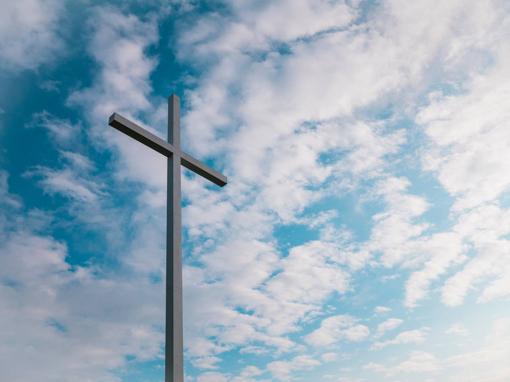

Gottesdienst
Sonntag –
Jeden 3. Sonntag: gemeinsames MittagessenJeder bringt etwas mit – und wer nichts mitbringt, ist genauso herzlich eingeladen!

Wir laden Dich herzlich im Namen unseres Herrn Jesus Christus zu all unseren Gemeindeveranstaltungen ein - alle Termine findest Du untenstehend.
Wir freuen uns auf Deinen Besuch bei uns und wünschen Dir den reichen Segen Jesu Christi!
Sonntag –
Jeden 3. Sonntag: gemeinsames MittagessenJeder bringt etwas mit – und wer nichts mitbringt, ist genauso herzlich eingeladen!
Dienstag
Mittwoch
Donnerstag (jeden 3. Donnerstag um 18:30)
Freitag
Jeden Sonntag von 10:30 bis 12 Uhr in der Brandenburger Str. 12, 27755 Delmenhorst. Du bist jederzeit herzlich eingeladen – komm einfach vorbei!
Ja. Am Sonntag gibt es Kinderstunden und eigene Kinderräume. Außerdem treffen sich Kinderstunde & Jungschar jeden Mittwoch um 17:30 Uhr.
Ja! Jeden 3. Sonntag essen wir gemeinsam zu Mittag. Jeder bringt etwas mit – wir sind mit hervorragenden Köchen gesegnet. Du darfst natürlich auch kommen, wenn du nichts mitbringst: Du bist herzlich eingeladen!
Ja, Parkplätze gibt es direkt vor dem Gebäude.
Ja, Toiletten sind vorhanden.
Du musst nichts mitbringen - offene Ohren und ein aufgeschlossenes Herz sind aber immer gut!
Wir verstehen uns als eine freikirchliche Einrichtung, das heißt keinem Gemeindeverband zugehörig. Wir sind unabhängig vom Staat und erheben keine Kirchensteuern. Mehr dazu unter Unser Glaube.
Unseren Gemeindeältesten Waldemar Weber erreichst du telefonisch und per WhatsApp unter +49 15561 548384. Alle Möglichkeiten findest du auf der Kontaktseite.
Du bist jederzeit herzlich eingeladen zu all unseren Gemeindeveranstaltungen. Komm einfach vorbei!
Brandenburger Str. 12